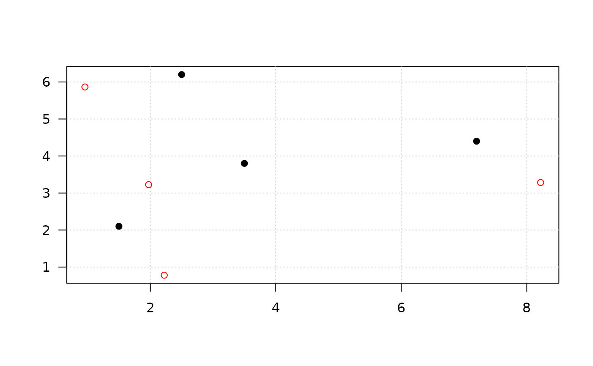
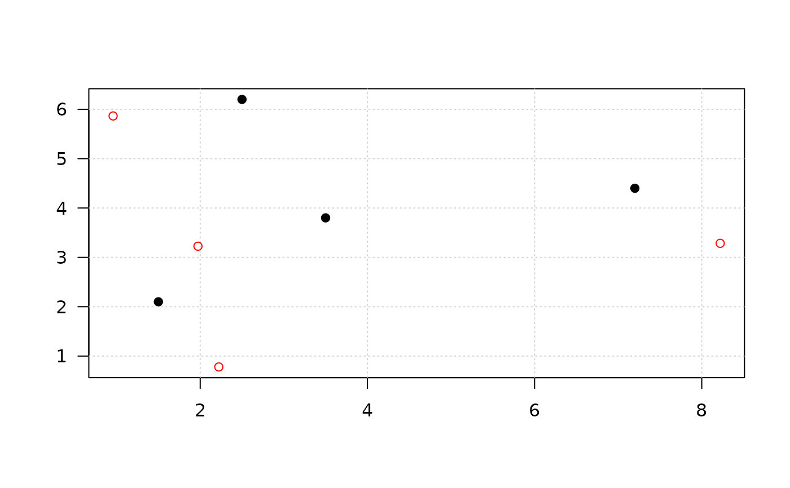

Mask coordinates using weighted random pertubation
Source:R/mask_weighted_random.R
mask_weighted_random.RdThis method uses per point the distance to the kth neighbor as the maximum
pertubation distance. Parameter r can be used to restrict the maximum distance
of the kth neighbor.
See also
Other point pertubation:
mask_grid(),
mask_random(),
mask_voronoi()
Examples
x <- cbind(
x = c(2.5, 3.5, 7.2, 1.5),
y = c(6.2, 3.8, 4.4, 2.1)
)
# plotting is only useful from small datasets!
# grid masking
x_g <- mask_grid(x, r=1, plot=TRUE)
 # random pertubation
set.seed(3)
x_r <- mask_random(x, r=1, plot=TRUE)
# random pertubation
set.seed(3)
x_r <- mask_random(x, r=1, plot=TRUE)
 if (requireNamespace("FNN", quietly = TRUE)){
# weighted random pertubation
x_wr <- mask_weighted_random(x, k = 2, r = 4, plot=TRUE)
}

if ( requireNamespace("FNN", quietly = TRUE)
&& requireNamespace("sf", quietly = TRUE)
){
# voronoi masking, plotting needs package `sf`
x_vor <- mask_voronoi(x, r = 1, plot=TRUE)
}
if (requireNamespace("FNN", quietly = TRUE)){
# weighted random pertubation
x_wr <- mask_weighted_random(x, k = 2, r = 4, plot=TRUE)
}

if ( requireNamespace("FNN", quietly = TRUE)
&& requireNamespace("sf", quietly = TRUE)
){
# voronoi masking, plotting needs package `sf`
x_vor <- mask_voronoi(x, r = 1, plot=TRUE)
}
 r_smooth <-
sdc_raster(enterprises, "production") |>
protect_smooth() |>
remove_sensitive()
r_smooth <-
sdc_raster(enterprises, "production") |>
protect_smooth() |>
remove_sensitive()